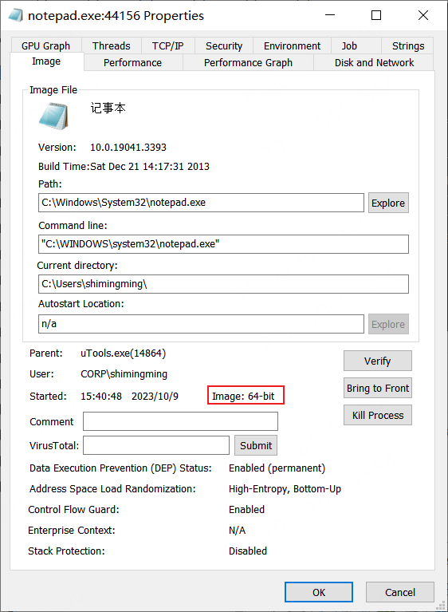
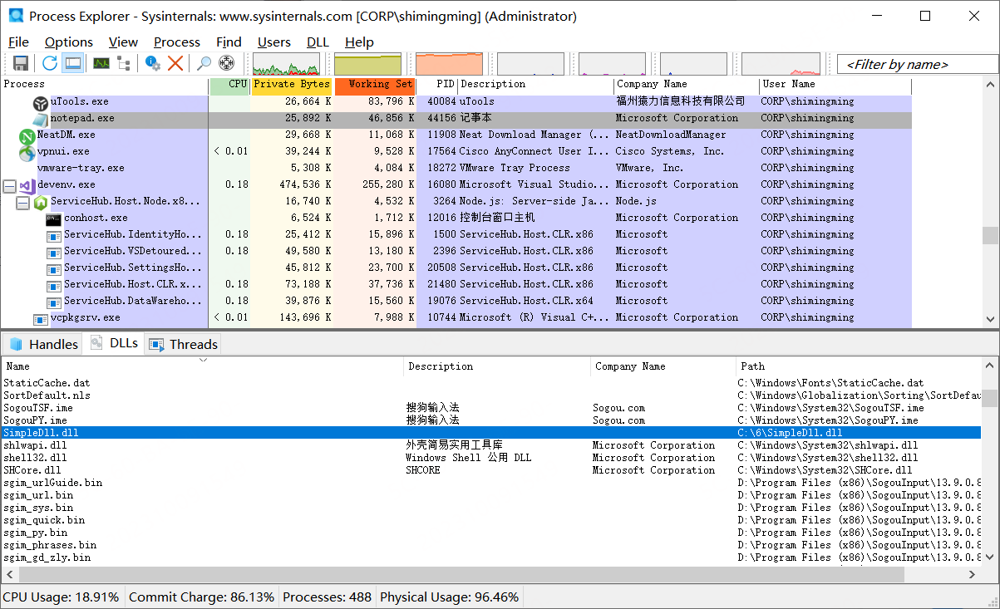

概述：windows 操作系统下注入dll到进程中
环境相关：win10操作系统注入本地编译的简单dll到notepad.exe
其他问题补充： CreateRemoteThread函数多参数传入使用方法_createremotethread 传递参数-CSDN博客
相关文章推荐
基本知识
注入dll的简单逻辑就是要在目标进程申请内存加载一个dll。分步骤来说就是：
- 打开进程
- 申请内存
- 写入内存
- 调用内存的函数
操作步骤
前提
- 进程间内存独立
运行在安全模式下的Windows，每个进程的内存空间都是独立的，互相不能访问彼此，所以代码注入才是一件比较麻烦的事情
- 所有进程中
kernel32.dll地址相同
每个进程都会加载
kernel32.dll，并且在那些进程中，这个库的地址都是一样的
原理
DLL注入主要分为如下几个步骤
-提权：如果提权的话，进程列表中很多进程是打不开的，并且可能获取不到PROCESS_ALL_ACCESS权限
- 获取PID：这部分不是必须的，但是PID每次运行都不一样，所以最好能获取，这里通过
CreateToolhelp32Snapshot()函数获取进程，遍历结果之后得到对应的PID - 打开进程：通过
OpenProcess()函数打开进程，同时指定权限是PROCESS_ALL_ACCESS权限，否则后面操作会失败，如果要获取这个权限就得先提权 - 通过
VirtualAllocEx()函数在目标进程中申请内存，然后用WriteProcessMemory()函数将LoadLibraey()函数的参数准备好写入到内存中 - 通过
LoadLibrary()函数加载kernel32.dll，实际上进程都会加载这个，第二次加载似乎直接获取模块句柄了。 - 通过
GetProcAddress()函数获取到LoadLibraryW()函数的地址，因为kernel32.dll在所有进程中的地址都相同，所以，在本进程中获取的函数地址在目标进程中也是那个函数 - 通过
CreateRemoteThread()函数在目标进程中创建一个线程，执行LoadLibraryW()函数载入自己的dll
代码
InjectDll.exe
InjectDll.exe 的代码如下所示：
完成了注入 simpledll.dll 到 notepad.exe 的功能
cpp
#include <windows.h>
#include <iostream>
#include <tlhelp32.h>
using namespace std;
DWORD GetPidByName(LPCWSTR lpName)
{
DWORD pid = 0;
HANDLE hSnap = ::CreateToolhelp32Snapshot(TH32CS_SNAPPROCESS, 0);
if (!hSnap)
{
cout << "Create Process Snap failed" << endl;
return 0;
}
PROCESSENTRY32 pe;
pe.dwSize = sizeof(PROCESSENTRY32);
Process32First(hSnap, &pe);
do {
if (!_wcsicmp(lpName, pe.szExeFile))
{
return pe.th32ProcessID;
}
} while (Process32Next(hSnap, &pe));
return pid;
}
bool EnableDebugPrivilege()
{
bool bRet = false;
HANDLE token;
TOKEN_PRIVILEGES tp;
// 打开进程令牌环
if (!OpenProcessToken(GetCurrentProcess(), TOKEN_ADJUST_PRIVILEGES | TOKEN_QUERY, &token))
{
cout << "Open Toekn Failed" << endl;
return bRet;
}
// 获取进程uuid
LUID luid;
if (!LookupPrivilegeValue(NULL, SE_DEBUG_NAME, &luid))
{
cout << "Get uid failed" << endl;
return bRet;
}
tp.PrivilegeCount = 1;
tp.Privileges[0].Attributes = SE_PRIVILEGE_ENABLED;
tp.Privileges[0].Luid = luid;
// 调整进程权限
if (!AdjustTokenPrivileges(token, 0, &tp, sizeof(TOKEN_PRIVILEGES), NULL, NULL))
{
cout << "Adjust Privilege failed" << endl;
return bRet;
}
bRet = true;
return bRet;
}
int main(char* argc, const char* argv[])
{
// 先提权
if (!EnableDebugPrivilege())
{
cout << "提权失败" << endl;
return 0;
}
DWORD dwTargetPid = GetPidByName(L"notepad.exe");
if (!dwTargetPid)
{
cout << "Get Target Process Id failed" << endl;
return 0;
}
// 打开目标进程
HANDLE hTarget = OpenProcess(PROCESS_ALL_ACCESS, false, dwTargetPid);
if (!hTarget)
{
cout << "Open Target Process failed" << endl;
return 0;
}
// 在目标进程申请内存
void* pLoadLibFuncParam = nullptr;
pLoadLibFuncParam = VirtualAllocEx(hTarget, 0, 4096, MEM_COMMIT | MEM_RESERVE, PAGE_READWRITE);
if (pLoadLibFuncParam == nullptr)
{
cout << "alloc memery failed" << endl;
CloseHandle(hTarget);
return 0;
}
LPCTSTR lpParam = L"C:\\6\\SimpleDll.dll";
if (!WriteProcessMemory(hTarget, pLoadLibFuncParam, (LPCVOID)lpParam, (wcslen(lpParam) + 1) * sizeof(TCHAR), NULL))
{
cout << "写入内存失败" << endl;
CloseHandle(hTarget);
return 0;
}
HMODULE hNtdll = LoadLibrary(L"kernel32.dll");
if (!hNtdll)
{
cout << "加载模块错误" << GetLastError() << endl;
CloseHandle(hTarget);
return 0;
}
cout << "模块句柄: " << hNtdll << endl;
void* pLoadLibrary = nullptr;
pLoadLibrary = GetProcAddress(hNtdll, "LoadLibraryW");
if (pLoadLibrary == nullptr)
{
cout << "找不到函数" << endl;
CloseHandle(hTarget);
return 0;
}
cout << "函数地址: " << pLoadLibrary << endl;
DWORD dwThreadId = 0;
HANDLE hRemoteThread = CreateRemoteThread(hTarget, NULL, 0, (LPTHREAD_START_ROUTINE)pLoadLibrary, (LPVOID)pLoadLibFuncParam, 0, &dwThreadId);
if (!hRemoteThread)
{
cout << "创建进程失败" << GetLastError() << endl;
CloseHandle(hTarget);
return 0;
}
cout << "运行结束" << hRemoteThread << endl;
getchar();
getchar();
CloseHandle(hTarget);
return 0;
}simpledll.dll
simple 只需要简单写一个对话框展示即可：
cpp
// dllmain.cpp : 定义 DLL 应用程序的入口点。
#include "pch.h"
DWORD WINAPI ThreadProc()
{
MessageBox(NULL, L"我已成功打入敌人内部 By Startu", L"报告首长", 0);
return 0;
}
BOOL APIENTRY DllMain( HMODULE hModule,
DWORD ul_reason_for_call,
LPVOID lpReserved
)
{
switch (ul_reason_for_call)
{
case DLL_PROCESS_ATTACH:
CreateThread(NULL, 0, (LPTHREAD_START_ROUTINE)ThreadProc, NULL, 0, NULL);
case DLL_THREAD_ATTACH:
case DLL_THREAD_DETACH:
case DLL_PROCESS_DETACH:
break;
}
return TRUE;
}补充说明
需要注意 注入的dll要和notepad.exe 编译版本保持一致。notepad.exe 是一个 64bit 进程

0x04、演示


工程文件：Windows-API-Usage/kernel32/DLLInject/DllInject at master · holdyounger/Windows-API-Usage